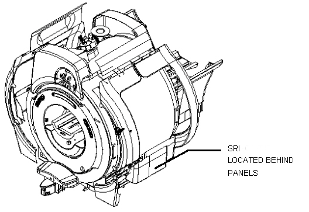
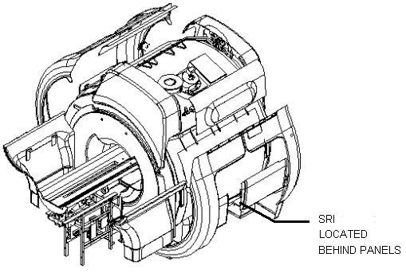
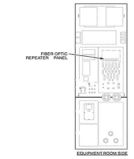
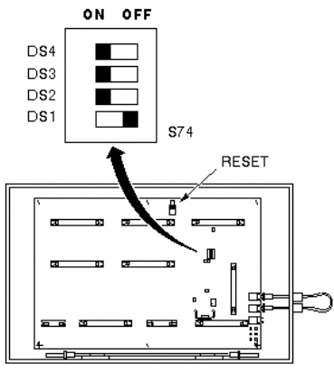
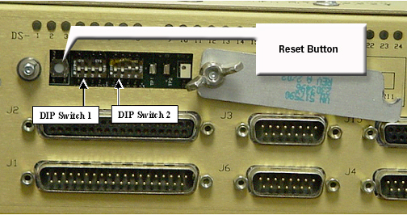

Proprietary to General Electric Company
Direction 5440000, Rev# 5
Signa HDxt Service Methods
Module Version 1.0, Version Date 4/26/07
Proprietary to General Electric Company |
| Required Persons | Preliminary Reqs | Procedure | Finalization |
|---|---|---|---|
| 1 | Not Applicable | 30 mins | Not Applicable |
This section describes an SRI-3 fiber optic loopback test that resides in EPROM on the Scan Room Interface board (SRI-3 board, MG2 A33 A1). This test is run by setting switches on the applicable SRI board. This test verifies proper functioning of the applicable SRI-3 board fiber optic transmitter and receiver. The Loopback Test Cable (46-287282G1) must be ordered if needed for SRI-3 troubleshooting.
| Item | Qty | Effectivity | Part# | Manufacturer | |
|---|---|---|---|---|---|
| Loopback Test Cable | 1 | - | 46-287282GG1 | - | |
This unit is located in different locations depending upon which magnet enclosure the system has. Instructions are provided for both the WideOpen and the Horizon magnet enclosures.
WideOpen Magnet Enclosure
The SRI module can be located under either the right or left side of the magnet enclosure. Identify which side the SRI module is on by locating the patient leads; the unit will be on that side.
Remove the lower enclosure trim covers to expose the tray that holds the PAC and SRI. See Illustration 1 and Illustration 2.
Illustration 1: ACCESS TO MAGNET ENCLOSURE FRONT VIEW, WIDEOPEN MAGNET ENCLOSURE

Illustration 2: ACCESS TO MAGNET ENCLOSURE REAR VIEW, WIDEOPEN MAGNET ENCLOSURE

Horizon Magnet Enclosure.
Remove right front side cover of magnet enclosure to access SRI module (see Illustration 3).
Illustration 3: SRI LOCATION, HORIZON MAGNET ENCLOSURE

Locate the fiber optic repeater board on the equipment room side of the penetration panel. See Illustration 4.
Illustration 4: Pen Panel

Place jumper JP1 on the fiber optic repeater board in the 'B' position to place it into loopback test mode.
Place the SRI-3 into test mode.
Loosen the wing nuts on the access plate. See Illustration 6.
Rotate the access plate clockwise to expose the DIP switches.
Set the S1 DIP switches DS2, DS3, and DS4 to On (Closed) position. Leave DS1 in its default (Off or Open) position. See Illustration 6.
Press RESET switch S1 to start the test.
Press on-board RESET button, S1, to start test. The Loopback Test begins after the regular set of power-up diagnostics has completed running.
Normally, DS2 (Green LED located above switch S1) is momentarily turned on. If the Loopback Test runs without errors, this LED is turned off and stays off until the DIPswitch configuration is changed and the reset button is pushed. There are two errors that can occur during this test:
Receiver is not connected to transmitter: If the loop from the SRI receiver, through the Fiber Optic repeater, and to the SRI transmitter is not complete, the DS2 LED flashes in the following sequence until the connection is complete: 1) LED flashes twice, 2) there will be a brief pause, 3) the LED flashes twice again.
Character transmitted is not same as character received: If the character transmitted differs from the character received, the DS2 LED flashes, pauses, and flashes again until the error is corrected, or the test is terminated.
If the SRI-3 passes this test, then it is working properly and the fiber optic communication path between it and the fiber optic repeater board is in good working order. Please proceed to Step - Finalization.
If the SRI-3 fails this test, then proceed to Step .
| NOTE: | Equipment damage possibility. Pulling on fiber optic cable will stress the end connectors. To properly disconnect fiber optic cables, apply finger pressure on connector from inside of enclosure. |
Disconnect fiber optic cables from J11 and J12 (leave J13, RESET, connected).
Connect the cable from J11 to J12, as shown in. This cable is not included with SRI-3 and must be ordered separately (46-287282G1) but it interconnects between the same connections.
Locate SRI-3 board DIP switch S1.
S14 DIP switches DS2, DS3, and DS4 to On (Closed) position. Leave DS1 in its default (Off or Open) position. See Illustration 5 for the SRI and Illustration 6 for SRI3.
Illustration 5: SRI Loopback Test - S2 Settings

Illustration 6: SRI2 DIP Switches

Press on-board RESET button, S1 for SRI-3, to start test. The Loopback Test begins after the regular set of power-up diagnostics has completed running.
Normally, DS2 (Green LED above S1 on SRI-3) is momentarily turned on. If the Loopback Test runs without errors, this LED is turned off and stays off until the DIP switch configuration is changed and the reset button is pushed. There are two errors that can occur during this test:
Receiver is not connected to transmitter: If the receiver is not connected to the transmitter, the DS2 (SRI-3) LED flashes in the following sequence until the connection is complete: 1) LED flashes twice, 2) there will be a brief pause, 3) the LED flashes twice again.
Character transmitted is not same as character received: If the character transmitted differs from the character received, the DS2 (SRI2) LED flashes, pauses, and flashes again until the error is corrected, or the test is terminated.
To stop test, set DS2, DS3, and DS4 to off position, and then press the S1 (SRI-3) RESET button. DS2 (green LED on SRI-3) should turn on.
| NOTE: | Symptom if DIP switches not set to default - If DIP switches are left in a position other than default (all switches OPEN or OFF), SRI-3 will not be able to communicate with system, i.e., normal SRI functioning will not be possible. |
Disconnect Loopback Test Cable and store the cable in convenient location for future use.
Connect fiber optic cables to J11 and J12.
Position cover over switch access and secure with wing nuts.
Replace right front side cover of magnet enclosure for SRI.
Put PAC and SRI assembly back under magnet for a wide-open magnet.
Place jumper JP1 on the Fiber Optic Repeater board in the “A” position to put the SRI back in Normal Mode.